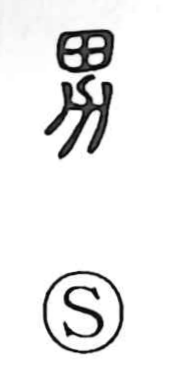

男

Uncategorized
Kun: otoko | On: dan, nan
male ・ man
Explanation
Shirakawa reads 男 as a compound of 田, the cultivated field, and 力, which in early forms depicts a plow. The pairing vividly evokes the act of working the land—ploughing and cultivation—and originally pointed to the person who managed agricultural fields. From this base it generalized to mean a man, and in later usage it also served to write the lowest of the five noble ranks (公・侯・伯・子・男), the title now rendered as “baron” in 男爵. In classical poetry, the character 士 often appears for the upright “man” of the warrior class, standing alongside 男’s agricultural and social nuances.